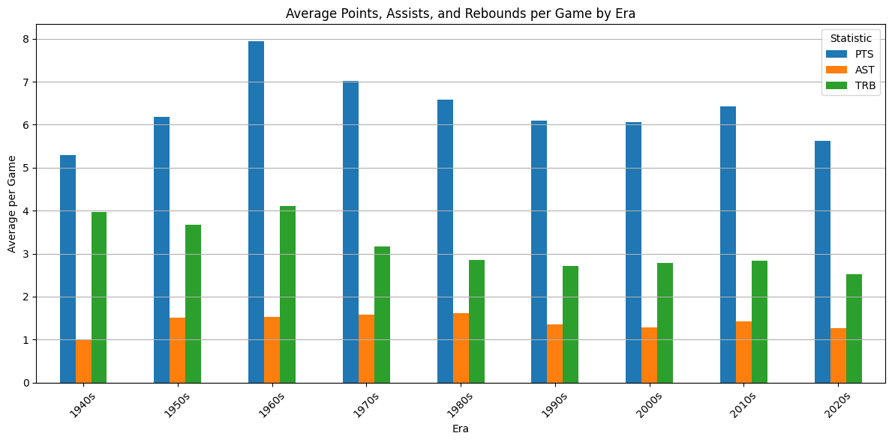
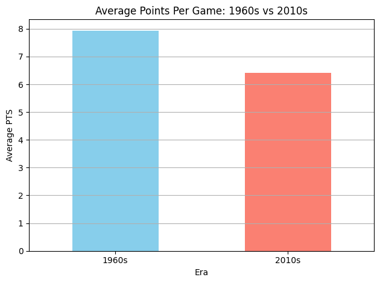
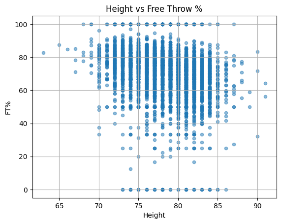
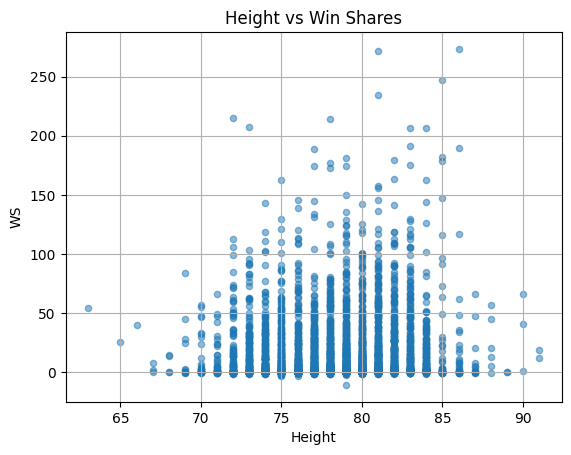
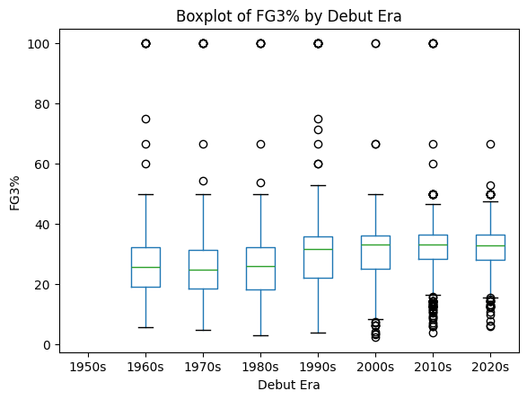
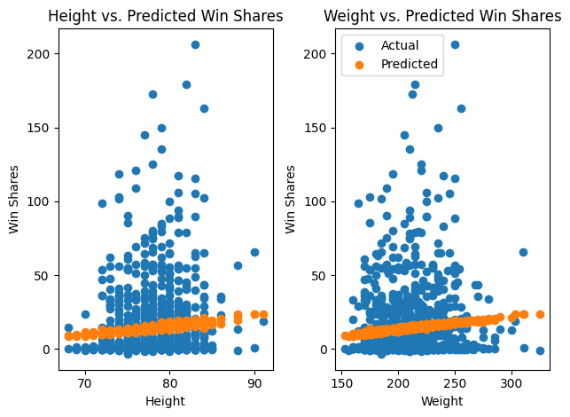
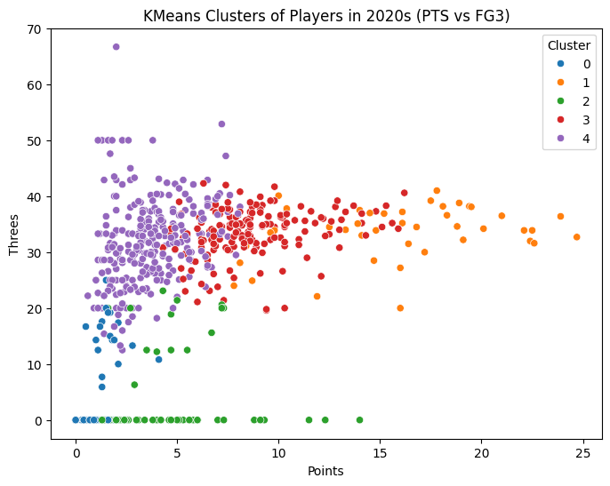
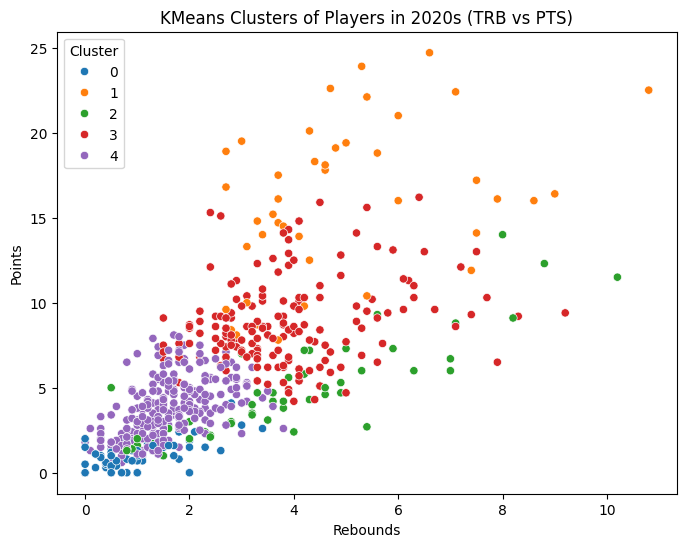

Downloaded from Andscape
Downloaded from Andscape
How NBA Player Performance and Roles Have Evolved Across Eras
CMSC320 - Summer 2025 Final Project Tutorial
Abubakr Hussien, Matt Hullana, Tanishq Ahuja
Contributions:
| Name | Sections Contributed | Description |
|---|---|---|
| Abu | B, C, F, G | Preprocessed and cleaned data; conducted exploratory data analysis on NBA performance trends. |
| Matt | A, C, D, E, F | Some data prep for ML analysis; did ML analysis using 4 different techniques |
| Tanishq | A, C, F | Helped come up with early questions; Did ANOVA test, did both plots for linear regression and k means clustering, wrote insights and conclusion. |
Basketball has evolved dramatically over the decades, from pace and playstyle to player roles and physicality. In this project, we explore how NBA player performance and characteristics have shifted across generations, using a comprehensive dataset of all 5,313 players from 1947 to the present.
Our goal is to understand the relationship between era, physical attributes, and on-court performance, and to uncover trends that reflect how the game itself has changed. Specifically, we aim to answer:
Has scoring performance (PTS) changed significantly across NBA eras?
Are physical attributes like height correlated with player success metrics such as Free Throw %, Player Efficiency Rating (PER), and Win Shares (WS)?
Has the distribution of player positions (e.g., Guard, Forward, Center) evolved over time?
Can we use machine learning models to predict player performance using features like height, weight, and debut year?
By combining exploratory data analysis, statistical hypothesis testing, and machine learning, this tutorial offers a multi-faceted view into the history and structure of NBA talent. Our insights can help fans, analysts, and aspiring data scientists better understand how the sport has transformed over nearly eight decades.
import pandas as pd
import matplotlib.pyplot as plt
import scipy.stats as stats
from sklearn.model_selection import train_test_split
from sklearn.linear_model import LinearRegression
from sklearn.ensemble import RandomForestRegressor
from sklearn.cluster import KMeans
from sklearn.preprocessing import StandardScaler
from sklearn.tree import DecisionTreeClassifier
from sklearn.metrics import r2_score, accuracy_score, classification_report
from scipy.stats import ttest_indOur dataset was sourced from Kaggle: NBA Player Stats Dataset, which includes career data for 5,313 NBA players from 1947 to the present. Each row represents a single player, with features including physical attributes (e.g., height, weight), career span (debut/final year), position(s), and advanced metrics like Points per Game (PTS), Assists (AST), Rebounds (TRB), Player Efficiency Rating (PER), and Win Shares (WS).
, which includes career data for 5,313 NBA players from 1947 to the present. Each row represents a single player, with features including physical attributes (e.g., height, weight), career span (debut/final year), position(s), and advanced metrics like Points per Game (PTS), Assists (AST), Rebounds (TRB), Player Efficiency Rating (PER), and Win Shares (WS).
df = pd.read_csv("NBA_PLAYERS.csv")
df| Name | Debut | Final | Position | Height | Weight | Birthday | School | HOF | Active | G | PTS | TRB | AST | FG% | FG3% | FT% | eFG% | PER | WS | |
|---|---|---|---|---|---|---|---|---|---|---|---|---|---|---|---|---|---|---|---|---|
| 0 | Alaa Abdelnaby | 1991 | 1995 | ['Forward', 'Center'] | 82 | 240.0 | June 24, 1968 | ['Duke'] | False | False | 256 | 5.7 | 3.3 | 0.3 | 50.2 | 0.0 | 70.1 | 50.2 | 13.0 | 4.8 |
| 1 | Zaid Abdul-Aziz | 1969 | 1978 | ['Center', 'Forward'] | 81 | 235.0 | April 7, 1946 | ['Iowa State'] | False | False | 505 | 9.0 | 8.0 | 1.2 | 42.8 | NaN | 72.8 | NaN | 15.1 | 17.5 |
| 2 | Kareem Abdul-Jabbar | 1970 | 1989 | ['Center'] | 86 | 225.0 | April 16, 1947 | ['UCLA'] | True | False | 1560 | 24.6 | 11.2 | 3.6 | 55.9 | 5.6 | 72.1 | 55.9 | 24.6 | 273.4 |
| 3 | Mahmoud Abdul-Rauf | 1991 | 2001 | ['Guard'] | 73 | 162.0 | March 9, 1969 | ['LSU'] | False | False | 586 | 14.6 | 1.9 | 3.5 | 44.2 | 35.4 | 90.5 | 47.2 | 15.4 | 25.2 |
| 4 | Tariq Abdul-Wahad | 1998 | 2003 | ['Forward'] | 78 | 223.0 | November 3, 1974 | ['Michigan', ' San Jose State'] | False | False | 236 | 7.8 | 3.3 | 1.1 | 41.7 | 23.7 | 70.3 | 42.2 | 11.4 | 3.5 |
| ... | ... | ... | ... | ... | ... | ... | ... | ... | ... | ... | ... | ... | ... | ... | ... | ... | ... | ... | ... | ... |
| 5308 | Ante Žižić | 2018 | 2020 | ['Forward', 'Center'] | 82 | 266.0 | January 4, 1997 | NaN | False | False | 113 | 6.0 | 3.9 | 0.6 | 58.1 | NaN | 71.1 | 58.1 | 17.4 | 3.5 |
| 5309 | Jim Zoet | 1983 | 1983 | ['Center'] | 85 | 240.0 | December 20, 1953 | ['Kent State University'] | False | False | 7 | 0.3 | 1.1 | 0.1 | 20.0 | NaN | NaN | 20.0 | -0.8 | -0.1 |
| 5310 | Bill Zopf | 1971 | 1971 | ['Guard'] | 73 | 170.0 | June 7, 1948 | ['Duquesne'] | False | False | 53 | 2.2 | 0.9 | 1.4 | 36.3 | NaN | 55.6 | NaN | 9.6 | -0.1 |
| 5311 | Ivica Zubac | 2017 | 2025 | ['Center'] | 84 | 240.0 | March 18, 1997 | NaN | False | True | 584 | 10.2 | 8.1 | 1.4 | 61.6 | 8.3 | 72.6 | 61.6 | 19.4 | 51.3 |
| 5312 | Matt Zunic | 1949 | 1949 | ['Guard', 'Forward'] | 75 | 195.0 | December 19, 1919 | ['George Washington'] | False | False | 56 | 4.9 | NaN | 0.9 | 30.3 | NaN | 70.6 | NaN | NaN | 2.0 |
5313 rows × 20 columns
We then performed the following data cleaning steps:
Converted Birthday to datetime using pd.to_datetime()
Parsed the Position field from a stringified list (e.g. "['Guard']") to a clean string (e.g. "Guard")
Created a new column called Career_Length as the difference between the final and debut years
Created an Era column by binning players by debut decade (e.g. 1990s, 2000s)
Dropped rows with missing values in critical fields (e.g., PTS, Height) for specific analyses
df['Birthday'] = pd.to_datetime(df['Birthday'], errors='coerce')
df['Position'] = df['Position'].str.replace(r"\[|\]|'", "", regex=True)
df['Career_Length'] = df['Final'] - df['Debut']
df['Era'] = (df['Debut'] // 10 * 10).astype(str) + 's'
df| Name | Debut | Final | Position | Height | Weight | Birthday | School | HOF | Active | ... | TRB | AST | FG% | FG3% | FT% | eFG% | PER | WS | Career_Length | Era | |
|---|---|---|---|---|---|---|---|---|---|---|---|---|---|---|---|---|---|---|---|---|---|
| 0 | Alaa Abdelnaby | 1991 | 1995 | Forward, Center | 82 | 240.0 | 1968-06-24 | ['Duke'] | False | False | ... | 3.3 | 0.3 | 50.2 | 0.0 | 70.1 | 50.2 | 13.0 | 4.8 | 4 | 1990s |
| 1 | Zaid Abdul-Aziz | 1969 | 1978 | Center, Forward | 81 | 235.0 | 1946-04-07 | ['Iowa State'] | False | False | ... | 8.0 | 1.2 | 42.8 | NaN | 72.8 | NaN | 15.1 | 17.5 | 9 | 1960s |
| 2 | Kareem Abdul-Jabbar | 1970 | 1989 | Center | 86 | 225.0 | 1947-04-16 | ['UCLA'] | True | False | ... | 11.2 | 3.6 | 55.9 | 5.6 | 72.1 | 55.9 | 24.6 | 273.4 | 19 | 1970s |
| 3 | Mahmoud Abdul-Rauf | 1991 | 2001 | Guard | 73 | 162.0 | 1969-03-09 | ['LSU'] | False | False | ... | 1.9 | 3.5 | 44.2 | 35.4 | 90.5 | 47.2 | 15.4 | 25.2 | 10 | 1990s |
| 4 | Tariq Abdul-Wahad | 1998 | 2003 | Forward | 78 | 223.0 | 1974-11-03 | ['Michigan', ' San Jose State'] | False | False | ... | 3.3 | 1.1 | 41.7 | 23.7 | 70.3 | 42.2 | 11.4 | 3.5 | 5 | 1990s |
| ... | ... | ... | ... | ... | ... | ... | ... | ... | ... | ... | ... | ... | ... | ... | ... | ... | ... | ... | ... | ... | ... |
| 5308 | Ante Žižić | 2018 | 2020 | Forward, Center | 82 | 266.0 | 1997-01-04 | NaN | False | False | ... | 3.9 | 0.6 | 58.1 | NaN | 71.1 | 58.1 | 17.4 | 3.5 | 2 | 2010s |
| 5309 | Jim Zoet | 1983 | 1983 | Center | 85 | 240.0 | 1953-12-20 | ['Kent State University'] | False | False | ... | 1.1 | 0.1 | 20.0 | NaN | NaN | 20.0 | -0.8 | -0.1 | 0 | 1980s |
| 5310 | Bill Zopf | 1971 | 1971 | Guard | 73 | 170.0 | 1948-06-07 | ['Duquesne'] | False | False | ... | 0.9 | 1.4 | 36.3 | NaN | 55.6 | NaN | 9.6 | -0.1 | 0 | 1970s |
| 5311 | Ivica Zubac | 2017 | 2025 | Center | 84 | 240.0 | 1997-03-18 | NaN | False | True | ... | 8.1 | 1.4 | 61.6 | 8.3 | 72.6 | 61.6 | 19.4 | 51.3 | 8 | 2010s |
| 5312 | Matt Zunic | 1949 | 1949 | Guard, Forward | 75 | 195.0 | 1919-12-19 | ['George Washington'] | False | False | ... | NaN | 0.9 | 30.3 | NaN | 70.6 | NaN | NaN | 2.0 | 0 | 1940s |
5313 rows × 22 columns
To understand how NBA player performance and characteristics have changed over time, we conducted several exploratory analyses. These include summary statistics, correlation analysis, and hypothesis testing across eras.
We began by grouping players by their debut era (e.g., 1960s, 1970s...) and computing the average points, assists, and rebounds per game.
era_stats = df.groupby('Era')[['PTS', 'AST', 'TRB']].mean().sort_index()
era_stats.plot(kind='bar', figsize=(12, 6))
plt.title('Average Points, Assists, and Rebounds per Game by Era')
plt.ylabel('Average per Game')
plt.xlabel('Era')
plt.xticks(rotation=45)
plt.grid(axis='y')
plt.legend(title='Statistic')
plt.tight_layout()
plt.show()
Observation: Scoring peaked for players debuting in the 1960s, with earlier decades also showing higher rebound counts — possibly due to lower shooting efficiency and more missed shots. Assists trended slightly upward in recent eras.
We tested whether scoring in the 1960s was significantly higher than in the 2010s using a Welch’s two-sample t-test:
pts_60s = df[df['Era'] == '1960s']['PTS'].dropna()
pts_10s = df[df['Era'] == '2010s']['PTS'].dropna()
t_stat, p_value = ttest_ind(pts_60s, pts_10s, equal_var=False)
display(t_stat)
display(p_value)np.float64(5.128798924225734)np.float64(3.527833660859907e-07)filtered_df = df[df['Era'].isin(['1960s', '2010s'])]
mean_pts = filtered_df.groupby('Era')['PTS'].mean()
mean_pts.plot(kind='bar', color=['skyblue', 'salmon'])
plt.title("Average Points Per Game: 1960s vs 2010s")
plt.ylabel("Average PTS")
plt.xlabel("Era")
plt.xticks(rotation=0)
plt.grid(axis='y')
plt.tight_layout()
plt.show()
Result: The t-test revealed a statistically significant difference (p ≈ 3.5e-07), confirming that 1960s players scored more per game than those in the 2010s.
We assessed whether a player's height correlated with performance metrics:
subset = df[['Height', 'FT%', 'PER', 'WS']].dropna()
correlation = subset.corr(method='pearson')
print(correlation) Height FT% PER WS
Height 1.000000 -0.244061 0.102993 0.085744
FT% -0.244061 1.000000 0.293479 0.203382
PER 0.102993 0.293479 1.000000 0.526456
WS 0.085744 0.203382 0.526456 1.000000
Then visualized the relationship:
subset.plot.scatter(x='Height', y='FT%', alpha=0.5)
plt.title("Height vs Free Throw %")
plt.grid(True)
plt.show()
subset.plot.scatter(x='Height', y='WS', alpha=0.5)
plt.title("Height vs Win Shares")
plt.grid(True)
plt.show()

Correlation values were weak (≈ ±0.08), showing almost no linear relationship between height and metrics like FT%, PER, or WS. This suggests that skillset, not height alone, is a stronger driver of individual performance.
We looked into the three point percentage (FG3%) overtime in the form of eras such as the 80s, 90s, etc.
First we bin the Debut data into eras
df_era = df[['Debut', 'FG3%']].dropna()
df_era = df_era[df_era['FG3%'] > 0]
bins=[1946, 1959, 1969, 1979, 1989, 1999, 2009, 2019, 2025]
labels = ['1950s', '1960s', '1970s', '1980s', '1990s', '2000s', '2010s', '2020s']
df_era['Era'] = pd.cut(df_era['Debut'], bins=bins, labels=labels)
df_era| Debut | FG3% | Era | |
|---|---|---|---|
| 2 | 1970 | 5.6 | 1970s |
| 3 | 1991 | 35.4 | 1990s |
| 4 | 1998 | 23.7 | 1990s |
| 5 | 1997 | 29.7 | 1990s |
| 9 | 2017 | 36.8 | 2010s |
| ... | ... | ... | ... |
| 5300 | 2013 | 28.6 | 2010s |
| 5303 | 2001 | 38.5 | 2000s |
| 5304 | 1996 | 25.0 | 1990s |
| 5307 | 2017 | 33.5 | 2010s |
| 5311 | 2017 | 8.3 | 2010s |
3030 rows × 3 columns
Then we do a one way ANOVA to see if there is signifance in the difference between FG3% over the eras
from scipy.stats import f_oneway
groups = []
for era, group in df_era.groupby('Era', observed=True):
if len(group) > 1:
groups.append(group['FG3%'].values)
f_stat, p_value = f_oneway(*groups)
print(f_stat, p_value)20.621471773091756 8.507420036953811e-24
df_era.boxplot(column='FG3%', by='Era')
plt.title("Boxplot of FG3% by Debut Era")
plt.suptitle("")
plt.xlabel("Debut Era")
plt.ylabel("FG3%")
plt.grid(False)
plt.show()
The f statistic of 20.62 is very large showing that there is at least a variation in FG3% between eras, more than within the ears. And the p-value being so small shows there is statistical significance. This means there is strong evidence of the fact that 3 point percentage has differed between eras.
This is shown as the box plots seem to get smaller and smaller as time goes on, and also go up. This shows us the fact that the skill floor has risen as time has gone on.
First, lets prep the data that we will be using for our ML models.
df['FG3%'].fillna(0, inplace=True)
if 'Weight' in df.columns and df['Weight'].isnull().any():
df['Weight'].fillna(df['Weight'].median(), inplace=True)
bucket = [1940, 1950, 1960, 1970, 1980, 1990, 2000, 2010, 2020, 2030]
labels = ['1940s', '1950s', '1960s', '1970s', '1980s', '1990s', '2000s', '2010s', '2020s']
df['Era'] = pd.cut(df['Debut'], bins=bucket, labels=labels, right=False)
#if a player has multiple positions, make it one but if not then just say position is Unknown
df['Primary Position'] = df['Position'].apply(lambda x: x.split('-')[0] if isinstance(x, str) else 'Unknown')
df.dropna(subset=['Debut', 'PTS', 'PER', 'WS', 'Height', 'Weight', 'Era'], inplace=True)/tmp/ipython-input-27-2895889619.py:1: FutureWarning: A value is trying to be set on a copy of a DataFrame or Series through chained assignment using an inplace method.
The behavior will change in pandas 3.0. This inplace method will never work because the intermediate object on which we are setting values always behaves as a copy.
For example, when doing 'df[col].method(value, inplace=True)', try using 'df.method({col: value}, inplace=True)' or df[col] = df[col].method(value) instead, to perform the operation inplace on the original object.
df['FG3%'].fillna(0, inplace=True)
/tmp/ipython-input-27-2895889619.py:3: FutureWarning: A value is trying to be set on a copy of a DataFrame or Series through chained assignment using an inplace method.
The behavior will change in pandas 3.0. This inplace method will never work because the intermediate object on which we are setting values always behaves as a copy.
For example, when doing 'df[col].method(value, inplace=True)', try using 'df.method({col: value}, inplace=True)' or df[col] = df[col].method(value) instead, to perform the operation inplace on the original object.
df['Weight'].fillna(df['Weight'].median(), inplace=True)
Next, lets create 4 different ML modeling techniques (Linear regression, K-means clustering, Random forest, Decision Tree Classifier) to help answer our questions from the introduction. Each technique is used differently to help answer each of those questions.
def run_linear_regression(df):
print("\nModel 1: Linear Regression to Predict Win Shares (WS)\n")
features = ['Height', 'Weight']
target = 'WS'
X = df[features]
y = df[target]
#split the data
X_train, X_test, y_train, y_test = train_test_split(X, y, test_size=0.2, random_state=42)
#create model
model = LinearRegression()
#train model
model.fit(X_train, y_train)
# Interpretation
print(f"Model Coefficients:")
for feature, coef in zip(features, model.coef_):
print(f"{feature}: {coef:.4f}")
print(f"Intercept: {model.intercept_:.4f}")
y_pred = model.predict(X_test)
r2 = r2_score(y_test, y_pred)
print(f"\nR-squared on Test Data: {r2:.4f}")
print("Showcases that a players great physical build does not equal successful metrics like win shares.")
return X_test, y_test, y_pred
def run_kmeans_clustering(df):
print("\nModel 2: K-Means Clustering to Identify Player Roles\n")
df_era = df[df['Era'] == '2020s'].copy()
features_for_clustering = ['PTS', 'TRB', 'AST', 'FG3%', 'PER']
scaler = StandardScaler()
X_scaled = scaler.fit_transform(df_era[features_for_clustering])
kmeans = KMeans(n_clusters=5, random_state=42, n_init=10)
df_era['Cluster'] = kmeans.fit_predict(X_scaled)
print("Cluster Centers (representing player roles in the 2020s):")
cluster_centers = scaler.inverse_transform(kmeans.cluster_centers_)
cluster_df = pd.DataFrame(cluster_centers, columns=features_for_clustering)
print(cluster_df.round(2))
print("\nInterpretation of Clusters:")
print("A cluster with high PTS and FG3% can be a 'Spot-up Shooter'.")
print("A cluster with high TRB and PER can be a 'Dominant Big in the Paint'.")
print("A cluster with high AST can be a 'Playmaker'.")
print("\nThis can be used to track which roles came to light or died out in different eras.")
return df_era
def run_random_forest(df):
print("\nModel 3: Random Forest to Predict Player Efficiency Rating (PER) using their height, weight, and year of their debut\n")
features = ['Height', 'Weight', 'Debut']
target = 'PER'
X = df[features]
y = df[target]
X_train, X_test, y_train, y_test = train_test_split(X, y, test_size=0.2, random_state=42)
model = RandomForestRegressor(n_estimators=100, random_state=42, oob_score=True)
model.fit(X_train, y_train)
y_pred = model.predict(X_test)
r2 = r2_score(y_test, y_pred)
print(f"R2 score: {r2:.4f}")
importances = pd.Series(model.feature_importances_, index=features).sort_values(ascending=False)
print("\nFeature Importances:")
print(importances)
print("The 'Debut' year is the most important feature as it showcases the potential career they will have during that era compared to their physical stats.")
def run_decision_tree_classifier(df):
print("\nModel 4: Decision Tree Classifier to Predict Hall of Fame (HOF) Status\n")
df_hof = df[df['Final'] < 2015].copy()
df_hof['HOF'] = df_hof['HOF'].astype(bool)
features = ['PTS', 'TRB', 'AST', 'PER', 'WS']
target = 'HOF'
X = df_hof[features]
y = df_hof[target]
X_train, X_test, y_train, y_test = train_test_split(X, y, test_size=0.25, random_state=42, stratify=y)
model = DecisionTreeClassifier(max_depth=4, random_state=42, class_weight='balanced')
model.fit(X_train, y_train)
y_pred = model.predict(X_test)
print(f"Model Accuracy: {accuracy_score(y_test, y_pred):.4f}")
print("\nClassification Report:")
print(classification_report(y_test, y_pred, target_names=['Not HOF', 'HOF']))
print("Uses a decision tree based on a players stats to see if they would make the HOF.")rlx_test, rly_test, rly_pred = run_linear_regression(df)
df_era = run_kmeans_clustering(df)
run_random_forest(df)
run_decision_tree_classifier(df)
Model 1: Linear Regression to Predict Win Shares (WS)
Model Coefficients:
Height: 0.2627
Weight: 0.0608
Intercept: -18.9273
R-squared on Test Data: 0.0073
Showcases that a players great physical build does not equal successful metrics like win shares.
Model 2: K-Means Clustering to Identify Player Roles
Cluster Centers (representing player roles in the 2020s):
PTS TRB AST FG3% PER
0 0.92 0.87 0.32 3.82 -0.45
1 16.02 4.91 4.56 33.56 15.54
2 4.69 3.75 0.59 4.28 18.11
3 8.79 3.88 1.76 33.53 12.87
4 3.73 1.59 0.88 32.04 10.16
Interpretation of Clusters:
A cluster with high PTS and FG3% can be a 'Spot-up Shooter'.
A cluster with high TRB and PER can be a 'Dominant Big in the Paint'.
A cluster with high AST can be a 'Playmaker'.
This can be used to track which roles came to light or died out in different eras.
Model 3: Random Forest to Predict Player Efficiency Rating (PER) using their height, weight, and year of their debut
R2 score: -0.2515
Feature Importances:
Debut 0.393065
Weight 0.358629
Height 0.248306
dtype: float64
The 'Debut' year is the most important feature as it showcases the potential career they will have during that era compared to their physical stats.
Model 4: Decision Tree Classifier to Predict Hall of Fame (HOF) Status
Model Accuracy: 0.9278
Classification Report:
precision recall f1-score support
Not HOF 0.99 0.93 0.96 818
HOF 0.38 0.83 0.52 41
accuracy 0.93 859
macro avg 0.69 0.88 0.74 859
weighted avg 0.96 0.93 0.94 859
Uses a decision tree based on a players stats to see if they would make the HOF.
import seaborn as sns
#Let's plot the results from the Linear Regression Model
plt.subplot(1, 2, 1)
plt.scatter(rlx_test['Height'], rly_test, label='Actual')
plt.scatter(rlx_test['Height'], rly_pred,label='Predicted')
plt.xlabel('Height')
plt.ylabel('Win Shares')
plt.title('Height vs. Predicted Win Shares')
plt.subplot(1, 2, 2)
plt.scatter(rlx_test['Weight'], rly_test, label='Actual')
plt.scatter(rlx_test['Weight'], rly_pred, label='Predicted')
plt.xlabel('Weight')
plt.ylabel('Win Shares')
plt.title('Weight vs. Predicted Win Shares')
plt.legend()
plt.tight_layout()
plt<module 'matplotlib.pyplot' from '/usr/local/lib/python3.11/dist-packages/matplotlib/pyplot.py'>
As you can see, a player's build (heigh and weight) don't predict Win Share performance, more factors are in play.
#Now let's plot the results from the K means
plt.figure(figsize=(8, 6))
sns.scatterplot(data=df_era, x='PTS', y='FG3%', hue='Cluster', palette='tab10')
plt.title('KMeans Clusters of Players in 2020s (PTS vs FG3)')
plt.xlabel('Points')
plt.ylabel('Threes')
plt.legend(title='Cluster')
plt.show()
plt.figure(figsize=(8, 6))
sns.scatterplot(data=df_era, x='TRB', y='PTS', hue='Cluster', palette='tab10')
plt.title('KMeans Clusters of Players in 2020s (TRB vs PTS)')
plt.xlabel('Rebounds')
plt.ylabel('Points')
plt.legend(title='Cluster')
plt.show()

As described previously:
The cluster with high PTS and FG3%, as seen in the plot, Cluster 1 and a little but of Cluster 3, can be a 'Spot-up Shooter'. Spot-up shooters are players who excel and recieving a pass and shooting immediately, which would explain their high Points and threes.
The cluster with high TRB and PER can be a 'Dominant Big in the Paint'. Cluster 1 (the far right) shows this role, these players are usually centers or forwards and are best at rebounding and scoring.
The low R squared shows us that physical statistics are poor predictors of success in the game. Height and weight have a minimal impact on a player's performance. Reinforces that the game requires more things such as thinking, dribble skill, speed.
The Clusters help us visualize different roles and playstyles given a player's stats. For sake of brevity the plots only show 2020s but if an individual were to plot other eras, we could see how these roles developed and passed.
The Debut year being the most import feature tells us a few things. This indicates that the era a player started signifcantly impacted their performance. Newer eras may have higher performance ratings due to the changing playstyle, better training, and the overall increase in the skill floor of the game.
The low precision for HOF is likely due to the fact that aren't many HOF players in the data. This upholds the idea that being in the HOF is more than just raw statistics. Other factors are taken into play such as championships or even the dominance of the player in their era. An old player could be HOF and have poor stats when comparing to a modern non-HOF player. Further showing us the increase in the skill floor.
We can see that physical traits are not as important as one would think. An average person with limited knowledge would logically assume height is a big factor but that's not so. But, with statistics, we are able to determine a player's "role" as some roles have higher/lower statistics. However, we aren't able to determine the HOF players with just the given statistics as HOF requires other, more "macro" factors such as dominance in the league at the time. Overall, we can see how the game has changed and evolved over time, showing the increase in certain statistics and changes in playstyles/roles.